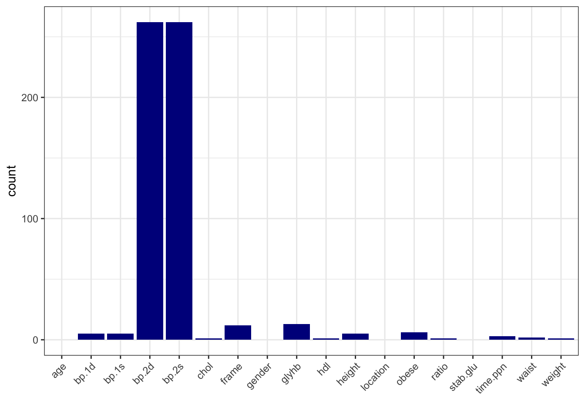

# load packages
rm(list=ls())
library(tidyverse)
library(ggcorrplot)
library(glmnet) # for fitting GLMs
library(fastDummies) # for features processing
library(pROC) # for ROC curves and AUC
library(ranger) # for random forestCommon steps
A case study: understanding obesity
Let’s go through a case study to illustrate the common steps in a life science data analysis project. We will use clinical data based on the diabetes study from the faraway package, along with additional simulated gene expression data related to obesity.
Our goal is to better understand obesity, particularly whether there are any genes associated with obesity status (“Yes”).
This tutorial serves as a refresher on key concepts from our foundation course, Introduction to Biostatistics and Machine Learning. Please make sure you follow and understand each step, as we will build on these methods throughout the week.
Load packages
Load Data
# Load the clinical data
data_obesity <- read_csv("data/data-obesity.csv")
# Load gene expression data
data_expr <- read_csv("data/data-obesity-genes.csv")
# preview clinical data
dim(data_obesity)
## [1] 403 21
glimpse(data_obesity)
## Rows: 403
## Columns: 21
## $ id <dbl> 1000, 1001, 1002, 1003, 1005, 1008, 1011, 1015, 1016, 1022, 1…
## $ BMI <dbl> 22.13, 37.42, 48.37, 18.64, 27.82, 26.50, 28.20, 34.33, 24.51…
## $ obese <chr> "No", "Yes", "Yes", "No", "No", "No", "No", "Yes", "No", "Yes…
## $ chol <dbl> 203, 165, 228, 78, 249, 248, 195, 227, 177, 263, 242, 215, 23…
## $ stab.glu <dbl> 82, 97, 92, 93, 90, 94, 92, 75, 87, 89, 82, 128, 75, 79, 76, …
## $ hdl <dbl> 56, 24, 37, 12, 28, 69, 41, 44, 49, 40, 54, 34, 36, 46, 30, 4…
## $ ratio <dbl> 3.6, 6.9, 6.2, 6.5, 8.9, 3.6, 4.8, 5.2, 3.6, 6.6, 4.5, 6.3, 6…
## $ glyhb <dbl> 4.31, 4.44, 4.64, 4.63, 7.72, 4.81, 4.84, 3.94, 4.84, 5.78, 4…
## $ location <chr> "Buckingham", "Buckingham", "Buckingham", "Buckingham", "Buck…
## $ age <dbl> 46, 29, 58, 67, 64, 34, 30, 37, 45, 55, 60, 38, 27, 40, 36, 3…
## $ gender <chr> "female", "female", "female", "male", "male", "male", "male",…
## $ height <dbl> 62, 64, 61, 67, 68, 71, 69, 59, 69, 63, 65, 58, 60, 59, 69, 6…
## $ weight <dbl> 121, 218, 256, 119, 183, 190, 191, 170, 166, 202, 156, 195, 1…
## $ frame <chr> "medium", "large", "large", "large", "medium", "large", "medi…
## $ bp.1s <dbl> 118, 112, 190, 110, 138, 132, 161, NA, 160, 108, 130, 102, 13…
## $ bp.1d <dbl> 59, 68, 92, 50, 80, 86, 112, NA, 80, 72, 90, 68, 80, NA, 66, …
## $ bp.2s <dbl> NA, NA, 185, NA, NA, NA, 161, NA, 128, NA, 130, NA, NA, NA, N…
## $ bp.2d <dbl> NA, NA, 92, NA, NA, NA, 112, NA, 86, NA, 90, NA, NA, NA, NA, …
## $ waist <dbl> 29, 46, 49, 33, 44, 36, 46, 34, 34, 45, 39, 42, 35, 37, 36, 3…
## $ hip <dbl> 38, 48, 57, 38, 41, 42, 49, 39, 40, 50, 45, 50, 41, 43, 40, 4…
## $ time.ppn <dbl> 720, 360, 180, 480, 300, 195, 720, 1020, 300, 240, 300, 90, 7…
# From the glimpse output
# - we can see that we have a mixture of numerical and categorical variables
# - and we note that we have missing data, NAs
# Check how many in each group
table(data_obesity$obese)
##
## No Yes
## 243 154
# Exclude BMI and hip variables (we will not need them for this analysis)
# since both BMI and hip are closely related to obesity status
data_obesity <- data_obesity %>%
select(-BMI, -hip)
# preview gene expression data
print(dim(data_expr))
## [1] 403 1001
print(data_expr[1:5, 1:5])
## # A tibble: 5 × 5
## id AFF3 `RNU6-890P` ZYG11A `SNORD115-36`
## <dbl> <dbl> <dbl> <dbl> <dbl>
## 1 1000 -0.318 -0.330 -0.801 0.614
## 2 1001 1.25 1.17 0.422 0.517
## 3 1002 -0.399 -0.465 0.194 1.17
## 4 1003 0.813 -1.01 1.54 -0.314
## 5 1005 0.0804 0.737 -0.567 -1.95Perform EDA
# run basic EDA
# - let's look at the distribution of numerical variables
# - missing data
# - and correlation between clinical variables
data_obesity %>%
select("obese", where(is.numeric), -id) %>%
pivot_longer(-obese, names_to = "variable", values_to = "value") %>%
ggplot(aes(x = value)) +
geom_histogram(bins = 30, fill = "blue4", color = "white") +
facet_wrap(~ variable, scales = "free") +
theme_bw() +
labs(title = "Distribution of Numerical Variables") +
ylab("")
# stratify by obesity status (Yes/No)
data_obesity %>%
select("obese", where(is.numeric), -id) %>%
pivot_longer(-obese, names_to = "variable", values_to = "value") %>%
ggplot(aes(x = value, fill = obese)) +
geom_histogram(bins = 30, color = "white", position = "identity", alpha = 0.5) +
facet_wrap(~ variable, scales = "free") +
theme_bw() +
labs(title = "Distribution of Numerical Variables by Obesity Status") +
ylab("") +
scale_fill_manual(values = c("No" = "blue4", "Yes" = "red4"))
# summarize categorical variables by obesity status
data_obesity %>%
select("obese", where(is.character), -id) %>%
pivot_longer(-obese, names_to = "variable", values_to = "value") %>%
group_by(variable, value, obese) %>%
summarise(count = n(), .groups = "drop") %>%
ggplot(aes(x = value, y = count, fill = obese)) +
geom_col(position = "dodge") +
facet_wrap(~ variable, scales = "free") +
theme_bw() +
labs(title = "Counts of Categorical Variables by Obesity Status") +
ylab("") +
scale_fill_manual(values = c("No" = "blue4", "Yes" = "red4"))
# distribution of randomly selected 10 genes
data_expr %>%
select(id, sample(2:ncol(data_expr), 12)) %>%
pivot_longer(-id, names_to = "gene", values_to = "expression") %>%
ggplot(aes(x = expression)) +
geom_histogram(bins = 30, fill = "blue4", color = "white") +
facet_wrap(~ gene, scales = "free") +
theme_bw() +
labs(title = "Distribution of Randomly Selected Genes") +
xlab("")# calculate number of missing data per variable
data_na <- data_obesity %>%
summarise(across(everything(), ~ sum(is.na(.))))
# make a table with counts sorted from highest to lowest
data_na_long <- data_na %>%
pivot_longer(-id, names_to = "variable", values_to = "count") %>%
arrange(desc(count))
# make a column plot to visualize the counts
data_na_long %>%
ggplot(aes(x = variable, y = count)) +
geom_col(fill = "blue4") +
xlab("") +
theme_bw() +
theme(axis.text.x = element_text(angle = 45, vjust = 1, hjust=1))
# Based on the number of missing data, let's delete bp.2s, bp.2d
# and use complete-cases analysis
data_obesity <- data_obesity %>%
dplyr::select(-bp.2s, -bp.2d) %>%
na.omit()
# Correlation heatmap
data_cor <- data_obesity %>%
select(where(is.numeric), -id) %>%
cor()
ggcorrplot(data_cor, hc.order = TRUE, lab = FALSE)
Task I: PCA
Write your own code to perform PCA on the gene expression data.
- Make a scores plot and color by obesity status. Would you say that the groups separate well?
- Which genes contribute the most to the first principal component (PC1)?
Example code
# Perform PCA on gene expression data
# filter gene expression data to include only those with obesity status
x <- data_expr %>%
filter(id %in% data_obesity$id) %>%
column_to_rownames("id") %>%
as.matrix()
# Scale the data prior pca
x_scaled <- scale(x)
# Calculate PCA
pca <- prcomp(x, center=TRUE, scale.=FALSE)
eigs <- pca$sdev^2
var_exp <- eigs / sum(eigs)
res_pca <- data.frame(PC1=pca$x[,1], PC2=pca$x[,2], PC3=pca$x[,3], PC4=pca$x[,4], PC5=pca$x[,5]) |>
rownames_to_column("id") |>
mutate(id = as.integer(id)) |>
as_tibble() |>
left_join(data_obesity, by="id")
res_pca_loadings <- pca$rotation
# show PCA scores plot
res_pca |>
ggplot(aes(x=PC1, y=PC2, group = obese, fill = obese)) +
geom_point(alpha = 0.6, shape = 21, size = 2) +
labs(title="PCA scores plot", x="PC1", y="PC2") +
xlab(paste("PC1 (Var: ", round(var_exp[1] * 100, 2), "%)")) +
ylab(paste("PC2 (Var: ", round(var_exp[2] * 100, 2), "%)")) +
theme_minimal() +
theme(legend.title=element_blank()) +
scale_fill_manual(values = c("No" = "blue4", "Yes" = "red4"))
# show top 10 loadings along PC1
res_pca_loadings |>
as.data.frame() |>
rownames_to_column("gene") |>
arrange(desc(abs(PC1))) |>
head(10) |>
ggplot(aes(x=reorder(gene, PC1), y=PC1)) +
geom_bar(stat="identity", fill="steelblue") +
coord_flip() +
labs(title="Top genes contributing to PC1", x="gene", y="Loading") +
theme_minimal()
# Answers:
# 1. The groups separate moderately well, with some overlap, along PC1
# 2. The top genes contributing to PC1 can be found in the loadings plot, top three are POMC, PCSK1 and MC4RAssociations: logistic regression
From the previous studies we may know a gene or two that are associated with obesity status. Let’s check if FTO is associated with obesity status in our data, controlling for age and height.
# Combine data: assume gene_df contains only genes, and meta_df contains metadata
data <- data_obesity %>%
left_join(data_expr, by = "id")
# Make sure obesity status is coded as binary (0 = No, 1 = Yes)
data <- data %>%
mutate(obese = as.factor(obese)) %>%
mutate(gender = as.factor(gender))
# Fit logistic regression
gene <- "FTO" # Example gene to test
formula_str <- paste("obese ~", paste0("`", gene, "`"), "+ age + height + gender")
model <- glm(as.formula(formula_str), data = data, family = "binomial")
print(summary(model))
##
## Call:
## glm(formula = as.formula(formula_str), family = "binomial", data = data)
##
## Coefficients:
## Estimate Std. Error z value Pr(>|z|)
## (Intercept) 0.233900 3.027166 0.077 0.9384
## FTO 1.200349 0.145673 8.240 <2e-16 ***
## age 0.006252 0.008174 0.765 0.4443
## height -0.018877 0.046052 -0.410 0.6819
## gendermale -0.779551 0.359679 -2.167 0.0302 *
## ---
## Signif. codes: 0 '***' 0.001 '**' 0.01 '*' 0.05 '.' 0.1 ' ' 1
##
## (Dispersion parameter for binomial family taken to be 1)
##
## Null deviance: 489.76 on 365 degrees of freedom
## Residual deviance: 375.61 on 361 degrees of freedom
## AIC: 385.61
##
## Number of Fisher Scoring iterations: 4
# From the output we see that
# - FTO is significantly associated with obesity status (p < 0.05)
# - The FTO estimate (log-odds) is 1.2 corresponding to an odds ratio of exp(1.2) = 3.32.
# - For every 1-unit increase in FTO expression, the odds of being obese increase by a factor of approximately 3.32, assuming all other variables are held constant.
# - There is also a gender effect, with exp(-0.78) = 0.46
# - meaning that the odds of being obese for males are 0.46 times the odds for females,
# - or in other words: Holding all other variables constant, males have 54% lower odds of being obese compared to females.Task II: Associations
Are there any other genes associated with obesity status?
- Write your own code to fit logistic regression models, including age, height and gender as covariates (known confounders from prior studies).
- Adjust your p-values for multiple testing using the Benjamini-Hochberg method.
- What are the top 5 genes associated with obesity status after FDR adjustment?
- How many genes show statistically significant association with obesity status at a false discovery rate (FDR) threshold of 0.05?
Example code
# Store logistic model outputs
all_genes <- colnames(data_expr)[-1] # Exclude 'id' column, all gene names
n_genes <- length(all_genes) # no of genes
estimate <- std_error <- z_value <- pvals <- numeric(n_genes) # initialize vectors for estimates, standard errors, z-values and p-values
# Loop over genes to fit logistic regression: obese ~ gene + age + height + gender
i <- 1
for (gene in all_genes) {
formula_str <- paste("obese ~", paste0("`", gene, "`"), "+ age + height + gender")
model <- glm(as.formula(formula_str), data = data, family = "binomial")
estiamte[i] <- coef(summary(model))[2,1 ] # coefficient for the gene
std_error[i] <- coef(summary(model))[2, 2] # standard error for the gene
z_value[i] <- coef(summary(model))[2, 3] # z-value for the gene
pvals[i] <- coef(summary(model))[2, 4] # p-value for the gene
i <- i + 1
}
# Adjust p-values using Benjamini-Hochberg (FDR)
p_adj <- p.adjust(pvals, method = "BH")
# Create result data frame
results_df <- data.frame(
gene = all_genes,
estimate = estimate,
std_error = std_error,
z_value = z_value,
p_value = gene_pvals,
p_adj = p_adj
)
# View top hits
head(results_df[order(results_df$p_adj), ], n = 10)
# Number of significant genes after FDR adjustment
significant_genes <- sum(results_df$p_adj < 0.05)
cat("Number of significant genes after FDR adjustment:", significant_genes, "\n")Predictive models
If instead of testing for associations we want to build a predictive model to predict obesity status based on gene expression data, we could use machine learning methods such as Lasso regression or Random Forest. Let’s do just that, and see which method will results in a better prediction performance.
Split Data
# join gene expression data with clinical data
data <- data_obesity %>%
left_join(data_expr, by = "id")
# split data into train and test
set.seed(123)
n <- nrow(data)
test_index <- sample(seq_len(n), size = 0.2 * n)
data_test <- data[test_index, ]
data_train <- data[-test_index, ]Feature Engineering and Scaling
# Conversion factors
inch2m <- 2.54 / 100
pound2kg <- 0.45
# ---- Process Training Data ----
data_train_processed <- data_train %>%
mutate(
height = round(height * inch2m, 2),
weight = round(weight * pound2kg, 2),
glu = log(stab.glu)
) %>%
select(-stab.glu, -id)
# Remove zero-variance features
nzv <- sapply(data_train_processed, function(x) length(unique(x)) > 1)
data_train_processed <- data_train_processed[, nzv]
# Remove highly correlated predictors (|r| > 0.8)
cor_matrix <- cor(select(data_train_processed, where(is.numeric)))
high_corr <- names(which(apply(cor_matrix, 2, function(x) any(abs(x) > 0.8 & abs(x) < 1))))
#data_train_processed <- data_train_processed %>% select(-all_of(high_corr))
data_train_processed <- data_train_processed %>% select(-c("weight", "waist"))
# Dummy encode categorical variables
data_train_processed <- dummy_cols(data_train_processed,
select_columns = c("location", "gender", "frame"),
remove_selected_columns = TRUE)
# Separate outcome and predictors
y_train <- data_train_processed$obese
x_train <- data_train_processed %>% select(-obese)
# Scale predictors
x_train_scaled <- scale(x_train)
train_means <- attr(x_train_scaled, "scaled:center")
train_sds <- attr(x_train_scaled, "scaled:scale")Prepare Test Data with Same Processing
# ---- Process Test Data ----
data_test_processed <- data_test %>%
mutate(
height = round(height * inch2m, 2),
weight = round(weight * pound2kg, 2),
glu = log(stab.glu)
) %>%
select(-stab.glu, -id)
# Dummy encode categorical variables
data_test_processed <- dummy_cols(data_test_processed,
select_columns = c("location", "gender", "frame"),
remove_selected_columns = TRUE)
# Remove same columns as in training
data_test_processed <- data_test_processed %>%
select(colnames(data_train_processed))
# Ensure same column order as training
x_test <- data_test_processed %>% select(-obese)
x_test <- x_test[, colnames(x_train)]
# Apply training set scaling
x_test_scaled <- scale(x_test, center = train_means, scale = train_sds)
y_test <- data_test_processed$obeseLasso Regression with Cross-Validation
As a reminder, Lasso logistic regression is a form of penalized logistic regression that incorporates L1 regularization to prevent overfitting and perform automatic variable selection.
In standard logistic regression, we model the log-odds of a binary outcome as a linear combination of predictors. However, when the number of predictors is large, or when predictors are correlated, the model can become unstable or overfit.
To address this, Lasso (Least Absolute Shrinkage and Selection Operator) adds a penalty term to the likelihood function:
\[ \text{Loss} = - \text{Log Likelihood} + \lambda \sum_{j=1}^p |\beta_j| \]
- The log-likelihood measures how well the model fits the data.
- The L1 penalty shrinks some coefficients exactly to zero, effectively selecting a subset of predictors.
- The tuning parameter λ (lambda) controls the strength of regularization:
- When λ = 0 → standard logistic regression
- As λ increases → more coefficients shrink to zero
Lasso automatically excludes irrelevant predictors and results in a spare model, easy to interpret.
# Fit Lasso regression with 10-fold CV
set.seed(123)
cv_model <- cv.glmnet(x_train_scaled, y_train, alpha = 1, standardize = FALSE, family = "binomial")
# Plot cross-validation error
plot(cv_model)
# Best lambda value
best_lambda <- cv_model$lambda.1se
cat("Best lambda:", best_lambda)
## Best lambda: 0.05232717Evaluate Model on Test Data
# Predict obesity status give the test data
pred_test <- predict(cv_model, s = best_lambda, newx = x_test_scaled, type = "response")
print(head(pred_test))
## s1
## [1,] 0.55987925
## [2,] 0.05089643
## [3,] 0.15378199
## [4,] 0.63425972
## [5,] 0.16356896
## [6,] 0.57418592
y_pred <- ifelse(pred_test > 0.5, "Yes", "No")
# Predictions (from earlier)
pred_probs <- predict(cv_model, newx = x_test_scaled, s = best_lambda, type = "response")
pred_labels <- ifelse(pred_probs >= 0.5, 1, 0)
# confusion matrix
conf_matrix <- table(Predicted = y_pred, Actual = y_test)
print(conf_matrix)
## Actual
## Predicted No Yes
## No 40 2
## Yes 7 24
# accuracy
accuracy <- sum(diag(conf_matrix)) / sum(conf_matrix)
cat("Accuracy:", round(accuracy, 3), "\n")
## Accuracy: 0.877
# compute precision, recall, F1
TP <- conf_matrix["Yes", "Yes"]
FP <- conf_matrix["Yes", "No"]
FN <- conf_matrix["No", "Yes"]
precision <- TP / (TP + FP)
recall <- TP / (TP + FN)
f1_score <- 2 * (precision * recall) / (precision + recall)
cat("Precision:", round(precision, 3), "\n")
## Precision: 0.774
cat("Recall:", round(recall, 3), "\n")
## Recall: 0.923
cat("F1 Score:", round(f1_score, 3), "\n")
## F1 Score: 0.842
# ROC Curve and AUC
y_test_numeric <- ifelse(y_test == "Yes", 1, 0) # Convert to numeric for ROC
y_pred_numeric <- as.numeric(ifelse(y_pred == "Yes", 1, 0)) # Convert to numeric for ROC
roc_obj <- roc(y_test_numeric, as.numeric(pred_probs))
plot(roc_obj, main = "ROC Curve", col = "blue", lwd = 2)
abline(a = 0, b = 1, lty = 2, col = "gray")
auc_val <- auc(roc_obj)
cat("AUC:", round(auc_val, 3), "\n")
## AUC: 0.966Variable Importance Plot
# Extract coefficients
coef_matrix <- coef(cv_model, s = best_lambda)
coef_df <- as.data.frame(as.matrix(coef_matrix))
coef_df$feature <- rownames(coef_df)
colnames(coef_df)[1] <- "coefficient"
# Filter out intercept and zero coefficients
coef_df <- coef_df %>%
filter(feature != "(Intercept)", coefficient != 0) %>%
mutate(abs_coef = abs(coefficient)) %>%
arrange(desc(abs_coef))
# Plot
ggplot(coef_df, aes(x = reorder(feature, abs_coef), y = abs_coef)) +
geom_col(fill = "steelblue") +
coord_flip() +
labs(title = "Variable Importance (Lasso Coefficients)",
x = "Feature", y = "Absolute Coefficient") +
theme_minimal()The Lasso logistic regression model achieved an accuracy of 87.7% and a high AUC of 0.966, indicating excellent overall discrimination between obese and non-obese individuals. With a precision of 0.774 and recall of 0.923, the model performs especially well at identifying obese individuals, while maintaining a relatively low false positive rate.
The Variable Importance plot shows that several well-known obesity-related genes such as POMC, FTO, LEP, PCSK1, LEPR, and MC4R were selected by the Lasso model as important predictors of obesity status, based on the magnitude of their coefficients. The largest coefficients were observed for POMC and FTO, suggesting these genes contributed most strongly to the model’s classification of obesity. Additionally, a few clinical features like frame size and height were retained, though with smaller effects, while LINC01144, a non-coding RNA, had only a minimal contribution.
Random Forest
A decision tree is a simple, rule-based model used for classification or regression.
- It splits the data into branches based on predictor variables.
- Each split is chosen to maximize separation between outcomes (e.g., using Gini impurity or information gain for classification).
- The tree continues splitting until a stopping rule is met (e.g., minimum node size or depth).
A tree predicting obesity status might learn rules like:
- If FTO expression > 1.5 → predict “obese”
- Else if height < 165 cm → predict “not obese”
Decisions tree are easy to interpret, handles both numerical and categorical data and aptures non-linear relationships. However, a single tree is unstable and often overfit the training data.
A Random Forest solves the overfitting problem by building an ensemble of many decision trees, each trained slightly differently.
The “forest” part:
- It trains hundreds of decision trees.
- Each tree makes its own prediction.
- The forest combines these:
- For classification: majority vote
- For regression: average of predictions
The “random” part:
Randomness is introduced in two ways to make each tree different:
- Bootstrap sampling: each tree is trained on a random sample (with replacement) of the data.
- Random feature selection: At each split, the tree considers a random subset of predictors, not all of them.
These random elements help diversify the trees, reduce overfitting, and improve generalization.
Random Forests are widely used in life sciences for tasks like gene classification, patient stratification, and biomarker discovery, as they can handle many predictors and complex interactions and provide variable importance scores, great for feature selection.
# Let's train Random Forest model with ranger() package
# Combine predictors and target into a single data frame for ranger
train_df <- data.frame(y = factor(y_train), x_train_scaled)
# Fit the random forest model using default parameters
set.seed(123)
rf_model <- ranger(
formula = y ~ .,
data = train_df,
probability = TRUE, # Enable probability predictions for ROC
num.trees = 500,
importance = "impurity"
)# Evaluate the Random Forest model on the test set
# Create test data frame with same structure
test_df <- data.frame(x_test_scaled)
# Predict probabilities for the positive class
rf_probs <- predict(rf_model, data = test_df)$predictions[, "Yes"]
# Binary predictions using threshold
rf_preds <- ifelse(rf_probs >= 0.5, "Yes", "No")
# Confusion matrix (base R)
conf_matrix <- table(Predicted = rf_preds, Actual = y_test)
print(conf_matrix)
## Actual
## Predicted No Yes
## No 46 19
## Yes 1 7
# Accuracy
accuracy <- sum(diag(conf_matrix)) / sum(conf_matrix)
cat("Accuracy:", round(accuracy, 3), "\n")
## Accuracy: 0.726
# ROC and AUC
roc_obj <- roc(y_test, rf_probs)
plot(roc_obj, col = "blue", lwd = 2, main = "Random Forest ROC")
abline(a = 0, b = 1, lty = 2, col = "gray")
cat("AUC:", auc(roc_obj), "\n")
## AUC: 0.8715221# feature importance
importance <- rf_model$variable.importance
# Convert to data frame
importance_df <- data.frame(
feature = names(importance),
importance = importance
)
# Plot top features
importance_df <- importance_df %>%
arrange(desc(importance))
ggplot(importance_df[1:20, ], aes(x = reorder(feature, importance), y = importance)) +
geom_col(fill = "darkgreen") +
coord_flip() +
labs(
title = "Variable Importance (Random Forest)",
x = "Feature", y = "Importance (Gini Impurity)"
) +
theme_minimal()The Random Forest model achieved an accuracy of 72.6% and an AUC of 0.87, which is notably lower than the Lasso model’s accuracy (87.7%) and AUC (0.97). While RF achieved a very low false positive rate (only 1 false positive), it struggled to correctly identify obese individuals, with only 7 true positives and 19 false negatives, indicating low recall.
The Random Forest model highlights POMC, PCSK1, FTO, LEP, MC4R, and LEPR as the top features contributing to classification accuracy, consistent with the Lasso model, where the same genes were also selected with large coefficients, suggesting strong and reproducible signals across methods. However, it does not identify height nor frame size as important features, which were retained in the Lasso model, instead it is reporting hdl.
We have however only run Random Forest with default parameters, and it is most likely it is not optimally tuned for this dataset. Random Forests are powerful but can be sensitive to hyperparameters, such as the number of trees, the number of features considered at each split (mtry), and the minimum size of terminal nodes (min.node.size).
Task III: tune Random Forsest
To improve the Random Forest model’s performance, tune its hyperparameters using a grid search approach. Specifically, experiment with mtry (the number of predictors randomly selected at each split) and min.node.size (the minimum number of observations required in a terminal node) and record the AUC for each combination.
To keep it simple, you can try the below values of mtry and min.node.size
- mtry = c(5, 10, 20, 50),
- min.node.size = c(1, 5, 10)
After finding the best combination of hyperparameters, compare the tuned Random Forest model’s performance to the default Random Forest model and the Lasso model.
- Which combination of
mtryandmin.node.sizeresulted in the highest AUC? - How does the tuned model’s performance compare to the default Random Forest model? How does it compare to the Lasso model?
Example code
# Tune RF
# Create a function to evaluate AUC for a set of parameters
tune_rf <- function(mtry_val, min_node) {
rf_model <- ranger(
y ~ ., data = train_df,
probability = TRUE,
num.trees = 500,
mtry = mtry_val,
min.node.size = min_node,
seed = 123
)
rf_probs <- predict(rf_model, data = test_df)$predictions[, "Yes"]
roc_obj <- roc(y_test, rf_probs, quiet = TRUE)
auc_val <- auc(roc_obj)
return(auc_val)
}
# Grid search over mtry and min.node.size
results <- expand.grid(
mtry = c(5, 10, 20, 50),
min.node.size = c(1, 5, 10)
)
results$AUC <- mapply(tune_rf, results$mtry, results$min.node.size)
# Find best combination
best_params <- results[which.max(results$AUC), ]
print(best_params)
# Refit final tuned Random Forest model with best hyperparameters
final_rf_model <- ranger(
y ~ ., data = train_df,
probability = TRUE,
num.trees = 500,
mtry = best_params$mtry,
min.node.size = best_params$min.node.size,
seed = 123
)
# Predict and evaluate
final_rf_probs <- predict(final_rf_model, data = test_df)$predictions[, "Yes"]
final_rf_preds <- ifelse(final_rf_probs > 0.5, "Yes", "No")
# Confusion matrix
conf_matrix <- table(Predicted = final_rf_preds, Actual = y_test)
print(conf_matrix)
# Accuracy and AUC
accuracy <- sum(diag(conf_matrix)) / sum(conf_matrix)
roc_obj <- roc(y_test, final_rf_probs)
auc_val <- auc(roc_obj)
cat("Tuned RF Accuracy:", round(accuracy, 3), "\n")
cat("Tuned RF AUC:", round(auc_val, 3), "\n")